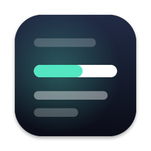

Underlens
2026
A teleprompter for Mac that follows your voice.
The script moves as you speak, in a small overlay right below the camera. Speech is recognised on the Mac and the app has no network access. Written in Swift; in App Store review now.
Support page
An iOS 26 mood diary with a drawn companion.
HKU ELEC3644, team of three, in progress. Ten-second check-ins, a journal with on-device photo tagging and voice transcription, entries on a map, an anonymous shared sky of moods with moderation, widgets, and English, Simplified and Traditional Chinese.
A private journal with a virtual pet and an anonymous social space.
Collaborative iOS app in SwiftUI, SwiftData, CloudKit and Supabase. I built the home-screen widget, LLM chat and entry summaries, and the account-deletion flow: cloud data is deleted before local identity is cleared, so a failed network call can be retried safely.
Source on GitHub
A&E waiting times in Hong Kong
2026
Forecasting waits at 18 public hospitals, 3 and 24 hours ahead.
HKU ELEC3544, team of three. Three hours ahead, gradient boosting reached a mean absolute error of 39.5 minutes on 1–10 November, against 53.2 for the historical mean and 41.2 for a one-line rule. A day ahead, nothing we built beat the rule. The blind test was preregistered before its data existed.
Source and report
Rank movies by comparing them in pairs, and follow friends’ rankings.
UBC CPEN 321, team of four, first place. I led Android and backend work: architecture, data model, REST API, Google sign-in verified on the server, and server-sent events for live feeds. Kotlin, TypeScript, Express, MongoDB.
Source on GitHub
Finding polyps pixel by pixel in endoscopy images.
UBC CPEN 355, team of three. U-Net, Attention U-Net and a pretrained ResNet34 U-Net on Kvasir-SEG, trained with Dice and cross-entropy loss in PyTorch.
An iOS app that quizzes students on their course material.
UBC team project, five people, released on the App Store.
Source on GitHub